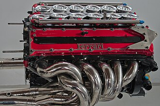

Founded in 1939 by Enzo Ferrari, Ferrari began as Auto Avio Costruzioni and produced its first car in 1947. The iconic Ferrari logo, symbolizing speed, luxury, and exclusivity, has been recognized worldwide ever since.
The First Ferrari Model
Ferrari's first model, the 125 S, was introduced in 1947 and laid the foundation for the brand’s future success. Powered by a 1.5L V12 engine, the car quickly established Ferrari's reputation for performance and design excellence.
Iconic Models Over the Years
Throughout the decades, Ferrari has produced several iconic models, including the 250 GTO, the F40, and the LaFerrari. These models have not only dominated racetracks but also captured the hearts of car enthusiasts around the world.
The Modern Era
Today, Ferrari continues to innovate with hybrid models like the SF90 Stradale, combining Ferrari's performance legacy with cutting-edge technology. The brand has evolved, but it remains synonymous with luxury and unparalleled engineering.
Ferrari's 3.0 L V12 Engine

The Ferrari Tipo 044/1 was the last V12 engine used by Ferrari in Formula 1 before transitioning to a V10 in 1996. This engine was a response to major FIA regulation changes following tragic events in the previous season.
The 75° V12 was reduced from 3.5 to 3.0 litres to comply with new rules. Despite the downsizing, it produced around 700 hp (522 kW) at 17,000 rpm in race trim. In qualifying, it was capable of reaching 760 hp in its highest state of tune.
While the V12 delivered impressive power, it was also fuel-hungry. Ferrari ultimately opted for a V10 in 1996, as it provided a better balance between power and fuel efficiency compared to both V12 and V8 alternatives.